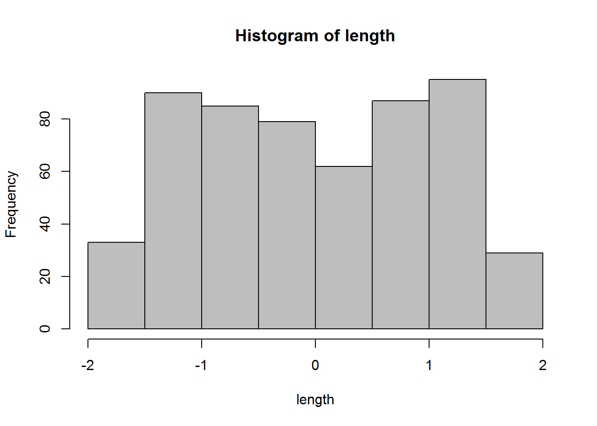
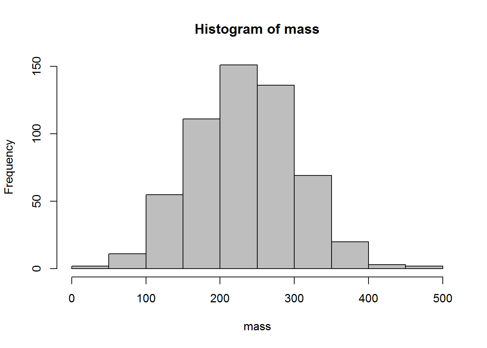
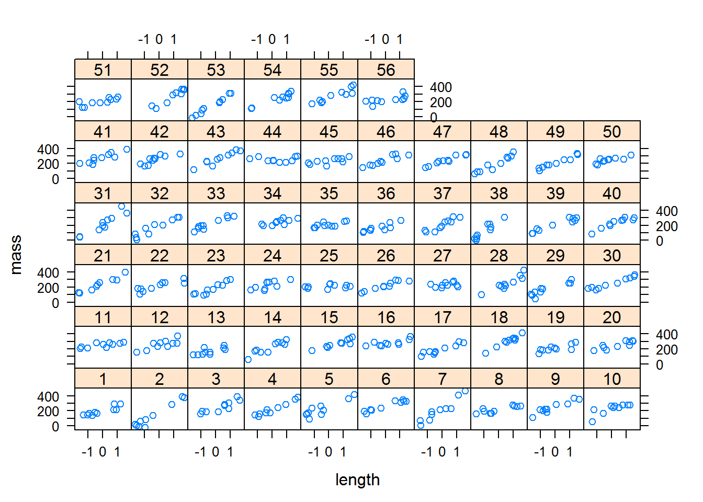
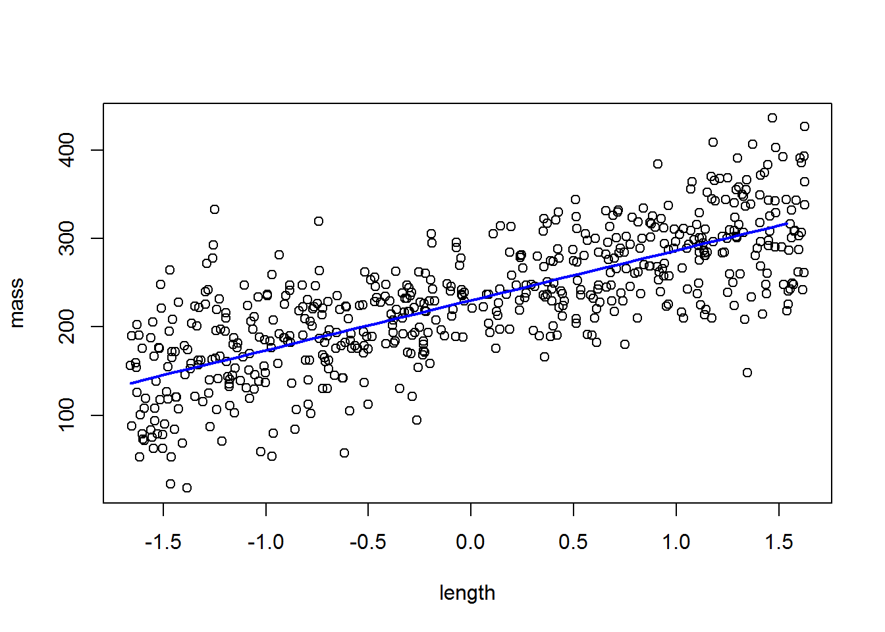
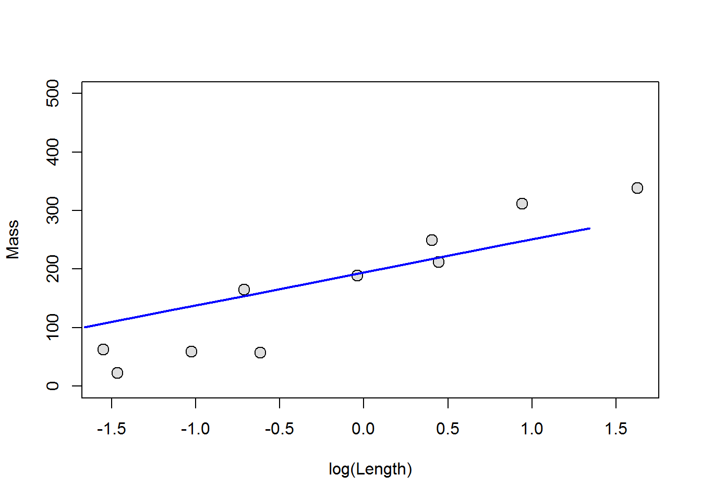
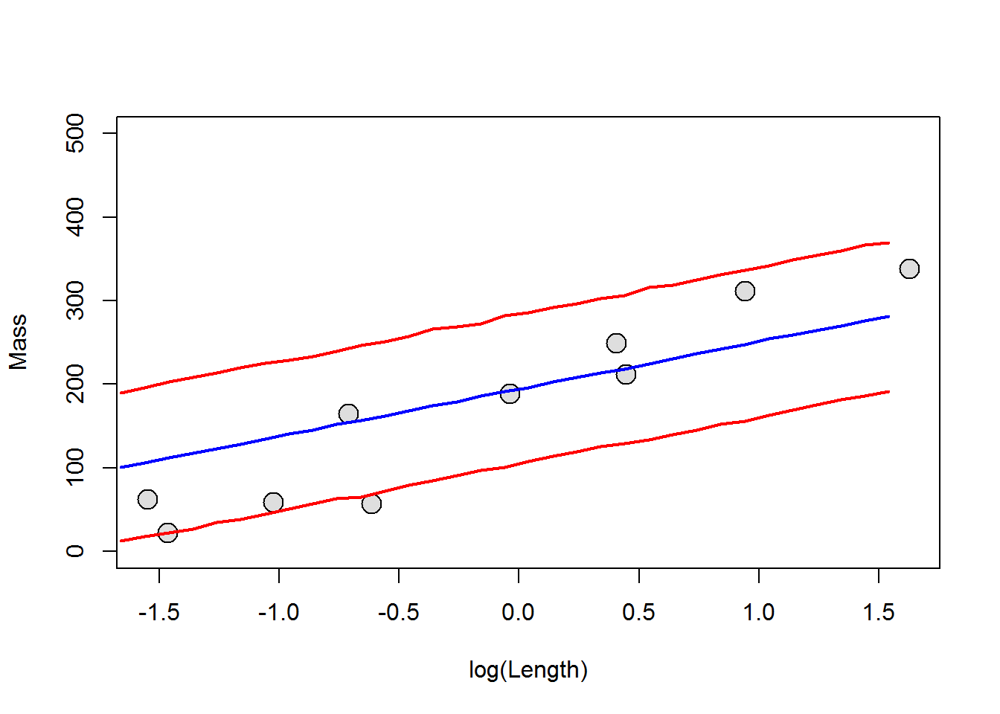
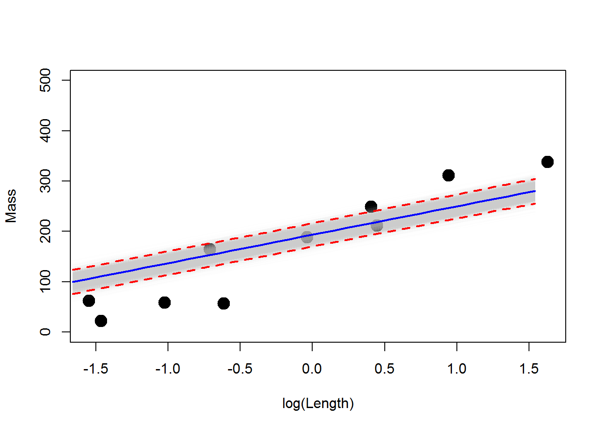

This week we will talk about extending linear models and generalized linear models to include “random effects” in the model, thus resulting in the “generalized linear mixed model” or GLMM. The GLMM is actually the most generalized formulation of our linear models that we have been discussing now for the past several weeks. All linear models (ANOVA, regression, t-tests, etc.) are simply special cases of the GLMM. As such, we can think of the GLMM as the framework within which we have been working for weeks now! For this week, we will start with examples of the linear mixed model.
OMG, why is this guy always talking about assumptions of linear models no matter what we do?!
Just as we discussed last week, linear models are just a special case of the GLMM. That is, the linear model assumes a certain error distribution (the normal) that helps things work smoothly and correctly. During the last two weeks, we discussed how we can use link functions to relax the assumption of linear models with respect to normality of residuals and homogeneity of variances, as well as assumptions about the linearity of relationships between explanatory variables and responses of interest by using data transformation. This week, we continue to relax the underlying assumptions of linear models to unleash the true power of estimation in mixed effects models. This is essentially as far as the basic framework for linear modeling goes (with the exception of multivariate techniques), and all other cases (e.g. spatial and temporal autocorrelation regressions) are simply specialized instances of these models.
Let’s take another look at the assumptions of linear models. Here, we will repeat the mantra from the past few weeks. Here are the three assumptions that we explicitly use when we use linear models, just in case you’ve forgotten them:
Independence of observations (residuals)
We’ve seen these before, but let’s recap. For assumption 1, we are assuming a couple of implicit things: 1. The variable is continuous (and it must be if it’s error structure is normal), and 2. The error in our model is normally distributed. In reality, this is probably the least important assumption of linear models, and really only matters if we are trying to make predictions from the models that we make. Of course, we are often concerned with making predictions from the models that we make, so we can see why this might be important. However, more often we are in extreme violation of this assumption in some combination with assumption 4 above to such a degree that it actually does matter. For example, a response variable that is binomial (1 or zero) or multinomial in nature cannot possibly have normally distributed errors with respect to x unless there is absolutely no relationship between X and Y, right? So, if we wanted to predict the probability of patients dying from some medical treatment, or the presence/absence of species across a landscape then we can’t use linear models. This is where the link functions that we have been discussing really come into play. The purpose of the link function is to place our decidedly non-normal error structures into an asymptotically normal probability space. The other key characteristic of the link function is that it must be invertible, that way we can get back to the parameter scale that we want to use for making predictions and visualizing the results of our models.
This time we’ve broken assumption 2 in two components: Colinearity and autocorrelation of errors. Remember that the manifestation of these problems is in the precision of our coefficient estimates, and have the potential to change the Type-I/II error rates in our models, causing us to draw false conclusions about which variables are important. As we discussed earlier in the course we expect to see some colinearity between observations, and we can deal with balancing this in our modeling through the use of model selection techniques to reduce Type-I and Type-II error. The past couple of weeks, we examined tools that help us determine whether or not colinearity is actually causing problems in our models that go beyond minor nuisances. As for the second part, autocorrelation, we looked at formulations of the GLM that used ‘generalized least squares’ to include auto-regressive correlation matrices in our analysis that will allowed us to relax this assumption of linear models and improve the precision of our parameter estimates. This week, we will further extend this to include random effects to account for non-independence in the observations, and correlation in the residual errors of explanatory variables that could otherwise cause issues with accuracy and precision of our estimates. We will continue to use model selection as a method for determining tradeoffs between information gain and parameter redundancy that results from colinearity between explanatory variables, as well as for hypothesis testing.
In past weeks, we looked at ways to reduce this issue by introducing blocking (categorical) variables to our models. Last week, we noted that this could be further mitigated through the use of weighted least squares and MLE within the GLM framework, which can be applied to a wide range of regression methods from linear models to GLMs and GLMMs. This week we will examine how we can use various formulations of the GLMM to account for heteroscedasticity in residual errors directly by including the appropriate error terms in our models. This essentially means that we can start to account for things like repeated measures, nested effects, and various other violations through the use of one tool- nifty!!
We’ve already looked at a couple of ways to deal with violations of these assumptions such as data transformation and/or polynomial formulations of the linear model. We will continue to apply these concepts this week as we begin to investigate the GLMM as robust framework for analysis.
The first thing you should understand about GLMMs is that they are useful for analyzing data from a large number of statistical probability distributions (basically, you can use them for any underlying error structure). But, when we use specific error structures, or make certain assumptions about the manner in which the heterogeneity of variances is structured with respect to specific factors, this model is often given specific names. For example, repeated measures ANOVA (or ANCOVA), nested ANOVA(or ANCOVA), factorial ANOVA (or ANCOVA), linear mixed models, linear mixed effects models, and generalized linear mixed effects models are all just different formulations of the GLMM with different names. It sounds confusing, but just remember this: any linear model with combinations of fixed and random effects is, at it’s core, just another GLMM! If you can convince yourself of this, you will improve your ability to understand a wide range of experimental designs and accompanying statistical models by understanding this one model type.
The second thing you should understand to “get” GLMMs is what exactly is meant by a “random effect”. So far in this course we have only dealt with “fixed” group effects. The fixed effect is a categorical variable that is used to explain some variation in our response of interest. When we use a fixed effect in a statistical model, we are making the assumption that the categories for this effect are “fixed”. In other words, we have assigned the the levels, or categories, based on some a priori knowledge that the levels themselves represent all possible groups that can be used to describe the data. Because of this definition, fixed effects are usually 1) things that we manipulate directly (like dosage or some other treatment), or 2) relatively simple grouping variables such as sex. By contrast, a “random effect” is an effect that we do not generally set ahead of time or manipulate, but rather one which is considered to be a sample from a population of potential categories that we cannot census or (often) control. Please note that there is not a single, widely accepted definition for either of these things in applied statistics and the definition can be context-specific. Don’t take it from me, though, ask Andrew Gelman, globally recognized as one of the world’s leading experts on applied statistics, including the development of many modern approaches here.
We will start our explorations into GLMM by looking at the somewhat familiar case of normal data. As with the relationship between ANOVA and GLM, we can say that the linear mixed model (LMM) is just a special case of the GLMM (hence the name).
So, what is a mixed model? This is a model that assumes some parameter of interest is drawn from a random sample from a distribution of possible samples. We usually use these when we are dealing with repeated samples for some group or individual, or if we wish to account for some latent variable beyond our control (e.g. lake). Essentially, the use of random effects allows us to remove extraneous noise (variance) from the study system by accounting for it directly. This can improve both the accuracy and the precision of estimates to make hypothesis testing more robust. It also allows us to generalize our conclusions to a broader scope (e.g. any lake instead of lakes X, Y, and Z). Finally, the approach allows for a great deal of flexibility in assumptions we make about the effects and associated errors in our model. We might assume within our model that effects are randomized by assigning random intercepts, random slopes and intercepts that are independent, or random slopes or intercepts that are correlated across our random variable. There are even rare cases when we might wish to examine random slopes with shared intercepts. Generally speaking, we want our random variable to contain a relatively large number of potential levels (usually > 5) as this tends to result in more accurate, and more precise parameter estimates.
As with so many things, these tools are often best investigated through the use of a worked example. For this section, we will use the data presented in Chapter 12 of Kery (2010), and we’ll walk through both frequentist and Bayesian implementations of the LMM.
We will start by generating the data used in the book chapter. These data are for the viper asps from Chapter 9, with a new twist. Here, we simulate length and mass data for 10 vipers from each of 56 different populations. I will not cover the following in detail here, but I encourage you to delve into it as you work through your text book.
Here is the code, shamelessly copy-and-pasted from Chapter 12
n.groups <- 56 # Number of populations
n.sample <- 10 # Number of vipers in each pop
n <- n.groups * n.sample # Total number of data points
pop <- gl(n = n.groups, k = n.sample) # Indicator for population
# Body length (cm)
original.length <- runif(n, 45, 70)
mn <- mean(original.length)
sd <- sd(original.length)
cat("Mean and sd used to normalise.original length:", mn, sd, "\n\n")## Mean and sd used to normalise.original length: 57.22358 7.289042length <- (original.length - mn) / sd
hist(length, col = "grey")
Xmat <- model.matrix(~pop*length-1-length)
intercept.mean <- 230 # mu_alpha
intercept.sd <- 20 # sigma_alpha
slope.mean <- 60 # mu_beta
slope.sd <- 30 # sigma_beta
intercept.effects<-rnorm(n = n.groups, mean = intercept.mean, sd = intercept.sd)
slope.effects <- rnorm(n = n.groups, mean = slope.mean, sd = slope.sd)
all.effects <- c(intercept.effects, slope.effects) # Put them all together
lin.pred <- Xmat[,] %*% all.effects # Value of lin.predictor
eps <- rnorm(n = n, mean = 0, sd = 30) # residuals
mass <- lin.pred + eps # response = lin.pred + residual
hist(mass, col = "grey") # Inspect what we've created
library(lattice)
xyplot(mass ~ length | pop)
So, as you can see we have successfully created 56 populations of critters, each of which has some pre-defined relationship between length and mass based on 10 samples from the population. Wow. What a mess. Next, we will take a look at a few different ways to analyze these data using maximum likelihood estimation and Bayesian inference. Ultimately, what we want to do here is estimate the relationship between length and mass while accounting for inherent (well, simulated) variability between populations.
First, we will analyze the data assuming that the intercepts for our linear model can vary between populations, but the relationship between length and mass is the same across all populations. This is a very common approach in many ecological and biological applications, as it often is the case that we are just trying to account for sampling design when we do this kind of analysis.
This is really straightforward to do in R. First, we will load the lme4 package that we will use for all LMM and GLMM implementation in this class. Then, we fit the model and print the output.
# Load the lme4 library
library(lme4)
# Fit the model
lme.fit1 <- lmer(mass ~ length + (1 | pop), REML = TRUE)
# Have a look
summary(lme.fit1)## Linear mixed model fit by REML ['lmerMod']
## Formula: mass ~ length + (1 | pop)
##
## REML criterion at convergence: 5814.8
##
## Scaled residuals:
## Min 1Q Median 3Q Max
## -3.3276 -0.6077 0.0391 0.5631 3.6570
##
## Random effects:
## Groups Name Variance Std.Dev.
## pop (Intercept) 480 21.91
## Residual 1681 41.00
## Number of obs: 560, groups: pop, 56
##
## Fixed effects:
## Estimate Std. Error t value
## (Intercept) 225.578 3.402 66.31
## length 65.366 1.815 36.02
##
## Correlation of Fixed Effects:
## (Intr)
## length 0.000As we look throught the output, the first thing that you’ll probably notice is that we don’t have a p-value, which is probably already driving some people nuts. This is a bit of a philosophical sticking point, which is why it is not included in the default print method for the summary of these objects. Here, we can do statistical inference based on the overlap with our coefficient estimates with zero. What does this look like?
Let’s say we want to see if our explanatory variable is significantly related to the response of interest, but we don’t have a p-value. If we still wanted to test significance with respect to some variable (at \(\alpha\) = 0.05), we could estimate the 95% CI for the regression coefficient and determine whether or not the 95% CI includes zero, like so:
# Get the coefficients from the model
coefs = summary(lme.fit1)$coefficients
# Compute 95% CI on regression coefficient for length above
# We add or subtract 1.96 times the standard error for the
# coefficient because 95% of the data fall within +/- 1.96
# standard deviations of the mean
lengthCI = c(coefs[2,1]-(1.96*coefs[2,2]),
coefs[2,1]+(1.96*coefs[2,2])
)
# Print the CI to the console
lengthCI## [1] 61.80887 68.92360Here, we can see that our 95% CI excludes zero, so we can say that length has a significant effect on mass in this species. If we wanted to show this relationship in a graph, we now have to do the math by hand, which is why I forced you to learn the math involved with this. Here is an example of how one might do this:
# Plot the raw data
plot(length, mass)
# Make a sequence of new lengths
lens = seq(min(length), max(length), by=.1)
# Predict new values for mass from lens using model
# coefficients from the previous code chunk
masses = coefs[1,1] + coefs[2,1]*lens
# Add lines to the plot
lines(lens, masses, lty=1, lwd=2, col='blue')
This gives us the overall estimate for the relationship between length and mass. What it does not get us are individual estimates of the intercepts like we might want. We can, however, get these out if we use the coef function:
# Get random intercepts and fixed sloppes
effs = coef(lme.fit1)
# Have a look at the first few
head(effs$pop)## (Intercept) length
## 1 210.5218 65.36624
## 2 177.2758 65.36624
## 3 229.6049 65.36624
## 4 223.1122 65.36624
## 5 248.1194 65.36624
## 6 253.0195 65.36624This gives us the random intercept for each population so we can make predictions about them individually if we want to! It only gives us one value for the length parameter because we specified this as a main effect. If want to plot the results for population 3, for example, our code would look like this:
# Plot the raw data
plot(length[pop==3], mass[pop==3],
ylim = c(0,500), pch=21, bg='gray87',
cex=1.5, xlab='log(Length)', ylab='Mass'
)
# Make a sequence of new lengths
lens = seq(min(length), max(length), by=.5)
# Predict new values for mass from lens
masses = effs$pop[3,1] + effs$pop[3,2]*lens
# Add lines to the plot
lines(lens, masses, lty=1, lwd=2, col='blue')
But, we still don’t really have a great way of looking at differences between groups if we are interested in those. Why is this? We do not have the technology. Basically, computing group-specific variances is too far ahead of our programming algorithms. But, we can use some simulation methods to do this.
The follwoing method was released in December 2016 to meet the growing need for characterizing uncertainty in group-level predictions from mixed models. Let’s take a look at how to use some of these tools.
library(merTools)
# Tell r which population we are
# working with. We will store as a variable
# upfront so we can easily change populations
# by re-defining the variable, which I will
# call `i`. We will use population 3 to stay
# consistent with the example above
i=3
# Make a sequence of new lengths
lens = seq(min(length),
max(length),
by=.1)
# Make a df that contains lengths
# and a label for population
newd = data.frame(
pop = rep(i, length(lens)),
length = lens
)
# Simulate predictions from the relationship
# stored in the model fit using our new data
PI <- predictInterval(merMod = lme.fit1, newdata = newd,
level = 0.95, n.sims = 10000,
stat = "median", type="linear.prediction",
include.resid.var = TRUE
)
# Plot the raw data for the population of interest, i
plot(length[pop==i], mass[pop==i],
ylim = c(0,500), pch=21, bg='gray87',
cex=1.9, xlab='log(Length)', ylab='Mass'
)
# Predict new values for mass from lens
masses = effs$pop[i,1] + effs$pop[i,2]*lens
# Add lines to the plot
lines(newd$length, PI$fit, lty=1, lwd=2, col='blue') # Mean
lines(newd$length, PI$upr, lty=1, lwd=2, col='red') # Upper CI
lines(newd$length, PI$lwr, lty=1, lwd=2, col='red') # Lower CI
We could go through and do this for each population (56 total), and we would have a pretty nice (albeit slightly unwieldy) set of figures describing the relationship between length and mass. Alternatively, we could use the model coefficients to estimate the relationship across all populations, and to make predictions about unknown populations.
Next, we will demonstrate how to implement the same model in JAGS. In principle, we are doing essentially the same thing here, but the approach is slightly more explicit.
Write the model
We start by specifying the model. The likelihood for the model is unchanged relative to what we would write for the fixed effects models with which we have worked previously. The only thing that changes is that instead of specifying priors on \(\alpha\) for each population using dnorm(0, 0.001), we specify each prior to using a mean of mu.int and a precision of tau.int. Here, mu.int and tau.int are hyperparameters, meaning that they govern the distribution from which our population-level parameters are drawn. Therefore, we need to specify hyperpriors for each of these parameters that can be used to estimate an overall (grand) mean effect. In the example below, we specify these using dnorm(0, 0.001) for mu.int and dunif(0, 100) for our variance (sigma.int).
# Write model
modelstring="
model {
# Likelihood
for (i in 1:n) {
mass[i] ~ dnorm(mu[i], tau) # The random variable
mu[i] <- alpha[pop[i]] + beta* length[i] # Expectation
}
# Priors
for (i in 1:ngroups){
alpha[i] ~ dnorm(mu.int, tau.int) # Random intercepts
}
mu.int ~ dnorm(0, 0.001) # Mean hyperparameter for random intercepts
tau.int <- 1 / (sigma.int * sigma.int)
sigma.int ~ dunif(0, 100) # SD hyperparameter for random intercepts
beta ~ dnorm(0, 0.001) # Common slope
tau <- 1 / ( sigma * sigma) # Residual precision
sigma ~ dunif(0, 100) # Residual standard deviation
}
"
writeLines(modelstring, "aspModel.txt")Package the data for jags
# Bundle data
asp.data <- list(mass = as.numeric(mass), pop = as.numeric(pop),
length = length, ngroups = max(as.numeric(pop)), n = n)Provide initial values for stochastic nodes
# Inits function
inits <- function(){list(alpha = rnorm(n.groups, 0, 2), beta = rnorm(1, 1, 1),
mu.int = rnorm(1, 0, 1), sigma.int = rlnorm(1), sigma = rlnorm(1))}Tell JAGS which parameters we want to trace
# Parameters to estimate
parameters <- c("alpha", "beta", "mu.int", "sigma.int", "sigma")MCMC settings
# MCMC settings
ni <- 2000
nb <- 500
nt <- 2
nc <- 3Run the model in JAGS
library(R2jags)
# Start Gibbs sampling
out <-jags(asp.data, inits, parameters, "aspModel.txt", n.thin=nt,
n.chains=nc, n.burnin=nb, n.iter=ni)Now have a look at the results
First, we can take a look at the model coefficients and diagnostics. Here, I am just going to print the model results for mean, sd, 95% CRI, and Neff.
# Get parameter estimates all by themselves
res = out$BUGSoutput$summary[, c(1,2,3,7,8,9)]
# Inspect results
print(res, digits = 2)## mean sd 2.5% 97.5% Rhat n.eff
## alpha[1] 209.864 10.890 188.690 230.465 1.001 2200
## alpha[2] 176.130 11.709 153.623 198.441 1.001 1800
## alpha[3] 229.300 11.392 206.976 250.813 1.001 2200
## alpha[4] 222.589 11.403 200.271 244.471 1.003 720
## alpha[5] 247.479 11.293 225.576 269.589 1.002 1500
## alpha[6] 252.767 11.384 230.278 275.813 1.001 1800##
## .
## .
## .
## ## mean sd 2.5% 97.5% Rhat n.eff
## alpha[56] 219.195 10.959 198.536 240.781 1.001 2200
## beta 65.149 1.775 61.683 68.726 1.001 1900
## deviance 5749.462 11.689 5729.176 5774.631 1.001 2100
## mu.int 222.846 3.464 216.020 229.510 1.002 1600
## sigma 41.096 1.313 38.633 43.720 1.002 2000
## sigma.int 22.669 2.999 17.335 29.028 1.003 830Judging by our diagnostics, it looks like our estimates have converged nicely, and we see that we have sufficiently sampled posteriors for all 60(!) parameters of interest.
Finally, we can look at the results for the linear predictions. This week, we’ll take a look at how to present results for linear predictors. We will use the same example as we did for the model we fit in lme4.
Make posterior predictions about length-weight relationship
# Tell r which population we are working with. We will store as a variable
# upfront so we can easily change populations by re-defining the variable,
# which I will call `i`. We will use population 3 to stay consistent with
# the example above
i=3
# Make a sequence of new lengths
lens = seq(min(length), max(length), by=.1)
# Extract posteriors that we want to work with (parameters for the pop i)
alpha = out$BUGSoutput$sims.list$alpha[,i]
beta = out$BUGSoutput$sims.list$beta
# Predict mass as a function of population and length
# Make a blank matrix to hold the predictions
preds = matrix(data = NA, nrow=length(alpha), ncol=length(lens))
# Now make predictions for each new value of length from each of the
# MCMC samples of alpha and beta.
for(j in 1:length(alpha)){
for(t in 1:length(lens)){
preds[j, t] = alpha[j] + beta[j] * lens[t]
}
}
# Plot the raw data for the population of interest, i
plot(length[pop==i], mass[pop==i], ylim = c(0,500), pch=21, bg='black',
cex=1.9, xlab='log(Length)', ylab='Mass')
# Plot the posterior predictions
for(j in 1:length(alpha)){
lines(x = lens, y = preds[j, ], col=rgb(.7,.7,.7,.02), lwd=1)
}
# Calculate the mean and 95% CRIs for posterior predictions
muPred = apply(preds, 2, mean)
lowPred = apply(preds, 2, quantile, probs=0.025)
upPred = apply(preds, 2, quantile, probs=0.975)
# Plot the mean and 95% CRI for predicted probability
lines(lens, muPred, col='blue', lwd=2, lty=1)
lines(lens, upPred, col='red', lwd=2, lty=2)
lines(lens, lowPred, col='red', lwd=2, lty=2)
As you can see, the mean prediction here is pretty much spot on with the REML approach to fitting the model. The big difference is that the precision is much tighter around the mean prediction for the Bayesian model. This is not because we did not specify the model correctly, or because we represented the uncertainty incorrectly. This is a phenomenon known as shrinkage, and it is a direct result of how the hierarchical modeling approach works in Bayesian inference. The reason for this shrinkage is that we are sharing information across populations in the Bayesian mode of inference based on how we specify our priors and how those feed into the likelihood.
What we have done with the intercept here is readily extended to include random effects on the estimates of beta. This will be one focus of our work in lab this week.
Of course, the methods covered this week are just for variables that assume normality. As you might expect by now, this framework is easily extended in both REML and Bayesian approaches to include a wide variety of error distributions. This will be the focus of our study next week, when we discussion generalized linear mixed models (GLMM).
Copyright © 2017 Dan Stich. All rights reserved.